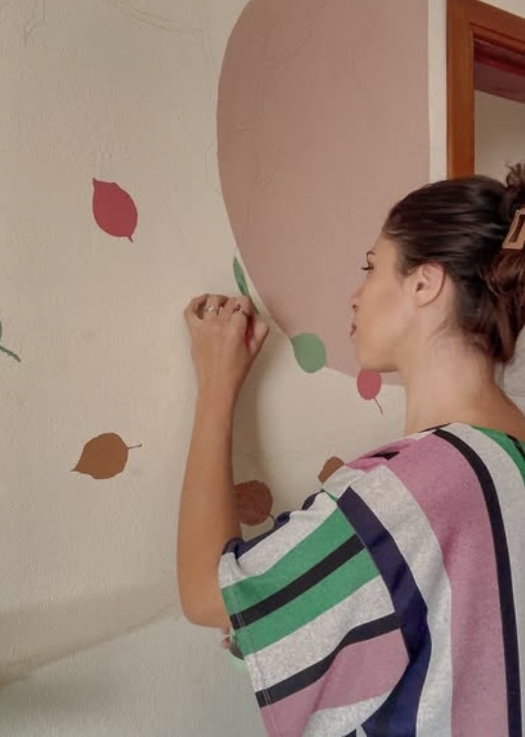
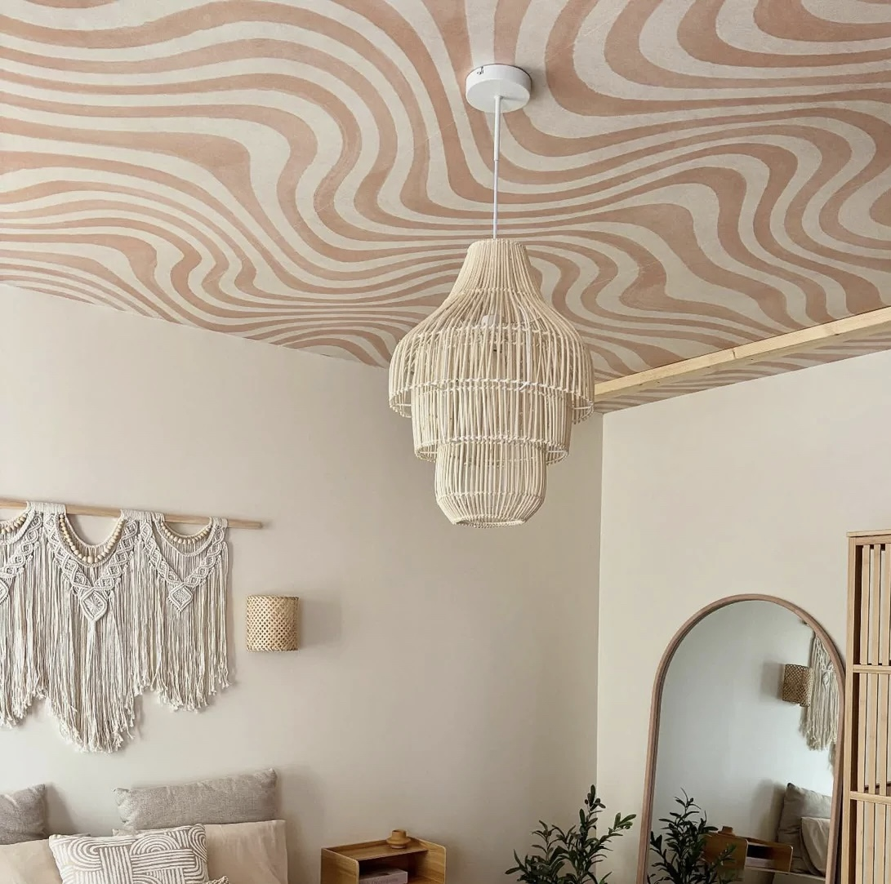
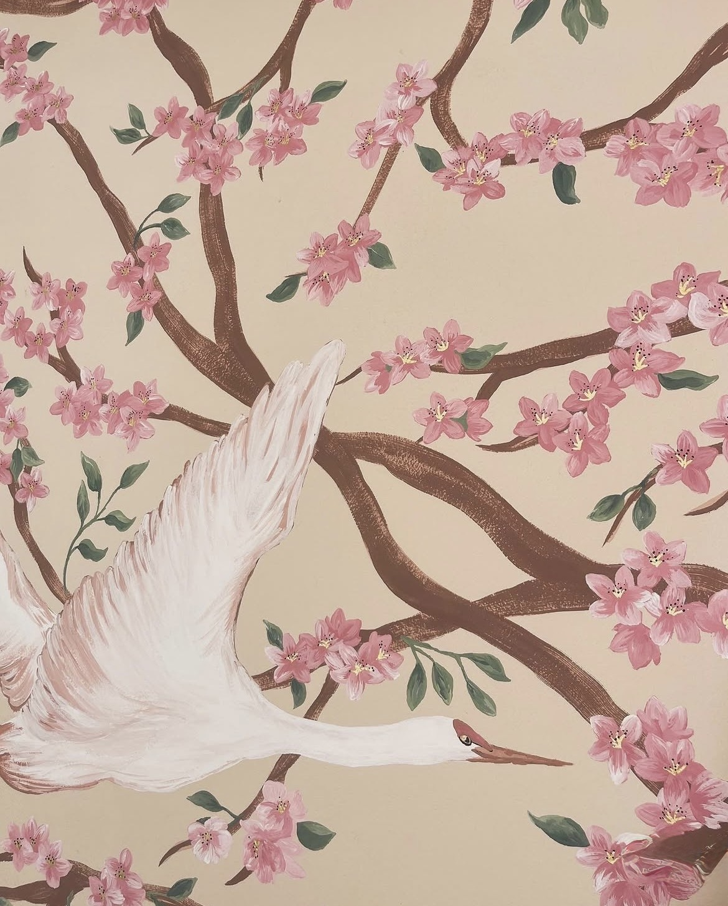
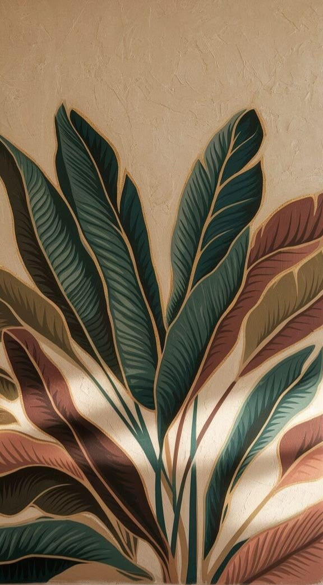
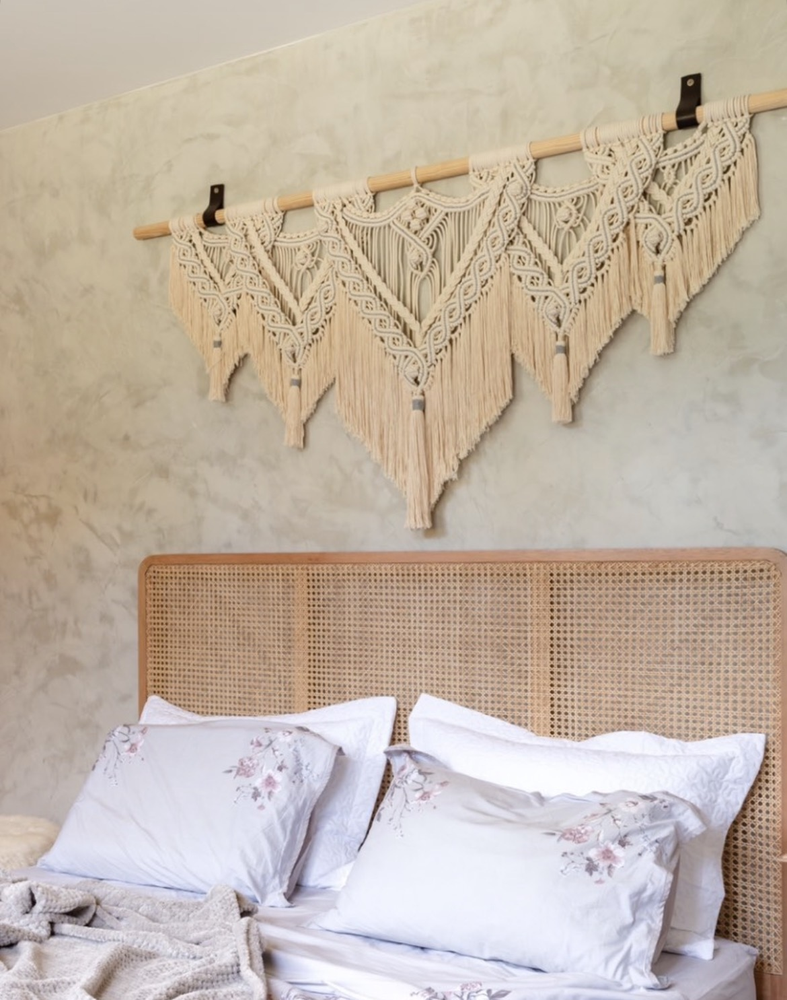
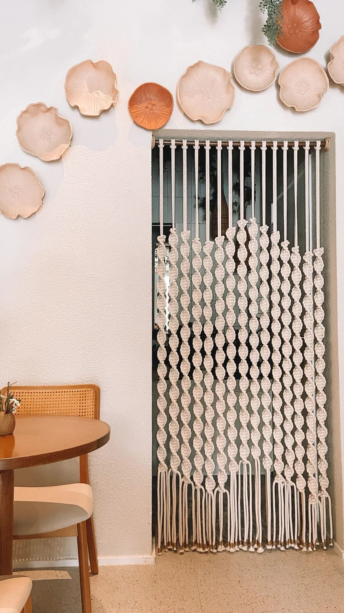
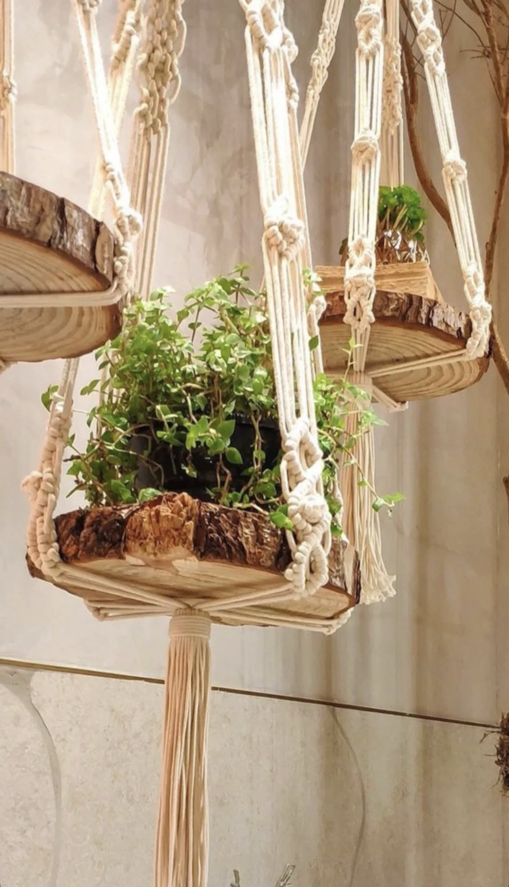
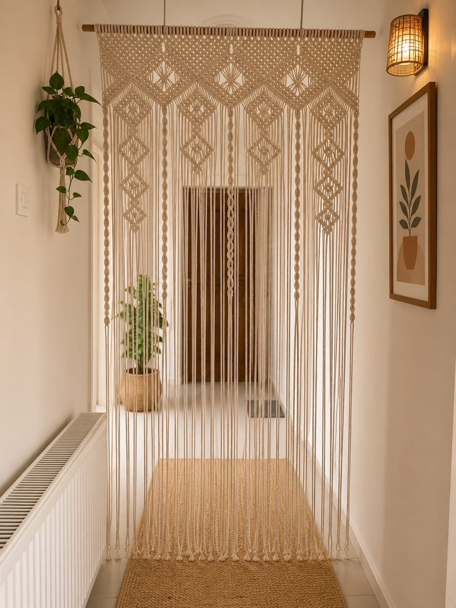
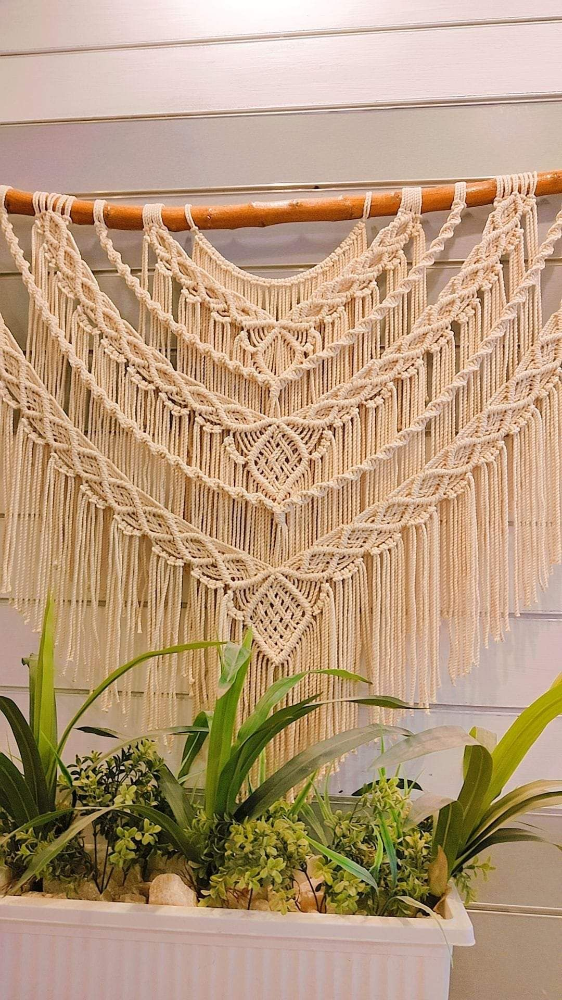

Murais
Pintura autoral para projetos residenciais, comerciais e espaços que desejam uma identidade própria.
- Ambientes internos
- Fachadas e áreas externas
- Cafés, lojas e pousadas
- Projetos personalizados
Sou Giovanna Peres, artista à frente da D'Arte Maris. Crio murais autorais e peças em macramê para espaços que pedem presença, textura e identidade.

A D’Arte Maris nasceu do desejo de transformar ambientes em espaços acolhedores e autênticos. Movida pelo amor ao oceano, encontrei em Garopaba um lugar onde a arte dialoga com a paisagem e valoriza espaços singulares. Desenvolvo murais autorais e peças em macramê que unem arte, design e a inspiração da natureza.
Cada projeto é concebido para integrar-se ao ambiente de forma sensível, revelando sua identidade e convidando à contemplação.
Pintura autoral para projetos residenciais, comerciais e espaços que desejam uma identidade própria.
Peças feitas à mão para acrescentar textura, movimento e materialidade ao ambiente.
Uma seleção de pinturas e peças desenvolvidas artesanalmente.










Você entra em contato pelo WhatsApp e me conta sua ideia. Pode ser uma referência, uma atmosfera que deseja criar ou simplesmente um espaço esperando ganhar vida.
Conversamos sobre o ambiente, suas inspirações e a atmosfera que você deseja criar. A partir disso, desenvolvo uma proposta pensada especialmente para esse espaço.
Você recebe uma proposta com investimento, prazo e condições de pagamento. Após a aprovação e o pagamento de 50% do valor, o projeto é confirmado e sua data é reservada.
Na data prevista, inicio a criação da obra. Durante o processo, compartilho registros do desenvolvimento para quem desejar acompanhar.
A obra é finalizada e, quando necessário, instalada no local. Um último cuidado para que tudo esteja exatamente como foi pensado.
Cada trabalho nasce para aquele espaço, evitando soluções genéricas.
Natureza, matéria, luz e formas naturais orientam minha pesquisa visual.
A execução manual preserva as particularidades e a presença de cada obra.
Dimensões, composição e linguagem são pensadas de acordo com o ambiente.
Se você tem uma parede, um ambiente ou um projeto em mente, me conte o que está imaginando.
Solicitar um projeto